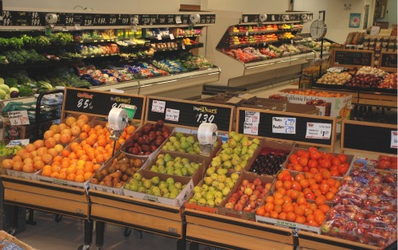

<html>
	<head>
		<title>Sai's groceries</title>
		<link rel="stylesheet" type="text/css" href="main.css">
		<style>
			header
			{
				height: 300px;
				background: #FF7554;
			}
		</style>
	</head>
	<body>
		<header>
			<nav>
				
				<ul>
					<li>
						<a href="index.html">Home</a>
					</li>
					<li>
						<a href="page1.html">Sai's Groceries</a>
					</li>
					<li>
						<a href="page2.html">Grab N' Go</a>
					</li>
					<li>
						<a href="page3.html">Catering and Event Planning</a>
					</li>
				</ul>
			</nav>
			<h1>Sai's Groceries<br><span class="subheading">2451 Busy St. Detroit, MI 12456</span></h1>
		</header>
		<div class="main">
			<aside class="side-bar">
				<div class="side-nav">
					<span>Side Navigation</span>
					<ul>
						<li>
							<a href="sub_page1.html">Stores and Products</a>
						</li>
						<li>
							<a href="sub_page2.html">Grab N Go Menu and Promotions</a>
						</li>
						<li>
							<a href="sub_page3.html">Contact Us</a>
						</li>
					</ul>
				</div>
			</aside><!-- 
		 --><div class="side-text">
				<h2>Sai's groceries</h2>
				<h3>History</h3>
				<p>
					
				Sairam Balaji started the family venture in 2016 by acquiring two stores in Clinton and Saline from Vescio's Foods and naming them Sai's Family Foods. Yep, you counted right, we just turned 1! When sai sr retired in 1986, son sairam acquired or built our now stores. As a privately held, independent supermarket chain based in Ann Arbor, Michigan, we currently employ about 200 associates. Our Central Kitchen, located in Clinton, is where we use only the finest ingredients to make our hand-made Deli and Bakery items.
				<br>
				<br>
				Sai's groceries is the hometown local food market that blends the best of today's freshness and style with the traditional values, personal service and wholesomeness you expect from the neighborhood grocer, but seldom find at other supermarkets.Our products are specifically chosen for their exceptional taste and superior ingredients. From local specialty gourmet foods and farm to table produce, to everyday staples, Busch’s delivers only the best to your table.
				<br>
				<br>
				 Our great selection is matched only by our passion for hospitality. Try our new award winning cakes!. We know people come to work to do their best. At Sai's, we'll provide you with an environment where going above and beyond is a regular occurrence and teamwork is more than just a goal. We'll give you the opportunity to use your potential to the fullest and to work in line with your individual growth. 
				<br>
				<br>
				We'll help you to learn our philosophies as well as job specifics so you can utilize your best judgment and decision making skills every day. We count on our associates to help grow our business.
				</p>
				<h3>Where we are headed!</h3>
				<p>

				Our industry is ever changing and we are looking for individuals who are passionate about food and people. We are a family-owned, Michigan based company that is heavily rooted in the communities we serve. Sai’s is committed to bettering our local economy and feeding our cities.
				<br>
				<br>
				Sai's grceries is committed to and often can help you organize, shop and save all in one place. Whether you want to shop for only Local products, or support your community groups and schools through Cash for Education. We have everything you need for catering an office meeting or hosting a party! Fresh handmade salads, boxed lunches, party trays piled high, and hot gourmet meals! Question? Call your local Grab n Go’s Deli. We can deliver your Catering Order for a fee: $15 for up to 10 miles from the store. Beyond 10 miles add $1 per mile.
				</p>

			</div>
		</div>
		<footer>
			<ul>
				<li>
					<a href="index.html">Home</a>
				</li>
				<li>
					<a href="page1.html">Sai's Groceries</a>
				</li>
				<li>
					<a href="page2.html">Grab N' Go</a>
				</li>
				<li>
					<a href="page3.html">Catering and Event Planning</a>
				</li>
				<li>
					<a href="site_map.html">Site Map</a>
				</li>
			</ul>
			<div class="copyright">© 2016 Business Name Inc.</div>
		</footer>
	<body>
</html>
